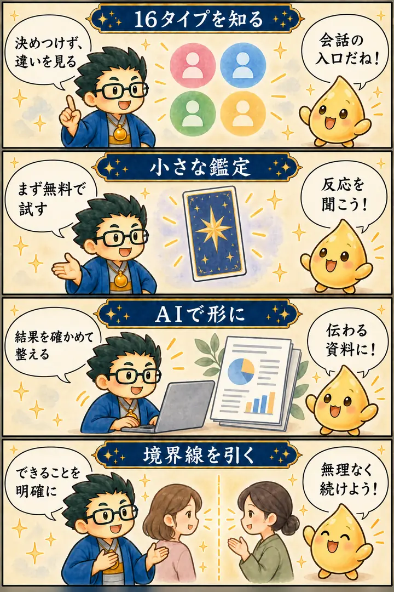

第3期 リアル講座・第2回
16鑑定・卜占の稼ぎ方
この回の要約
小さな体験を入口にし、必要な人へ深い鑑定を届ける。
16タイプ診断の実演を起点に、四分類、タロット、AIによる資料作り、無料体験から有料鑑定への案内を考えました。鑑定者自身が消耗せず続けるため、提供範囲と境界線も大切にします。
4コマ漫画でつかむ

タイムスタンプ
時間を押すと、上の動画がその場面から再生されます。
覚えておきたいこと
- 16タイプの結果は、相手との会話を始める手がかり。
- 無料の短い体験と有料の深い鑑定で、何を提供するかを分ける。
- AIは資料作りの補助。判断と最終確認は鑑定者が担う。
- 相手を察する力があっても、自分を消耗させない境界線を持つ。
復習ポイント
講義内の占術上の説明・時代の読み・象徴的な解釈は、講師の見立てです。客観的な事実や将来を保証するものではありません。